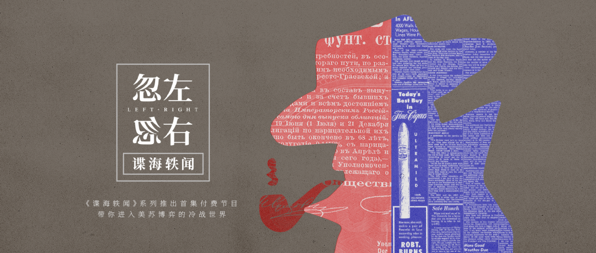
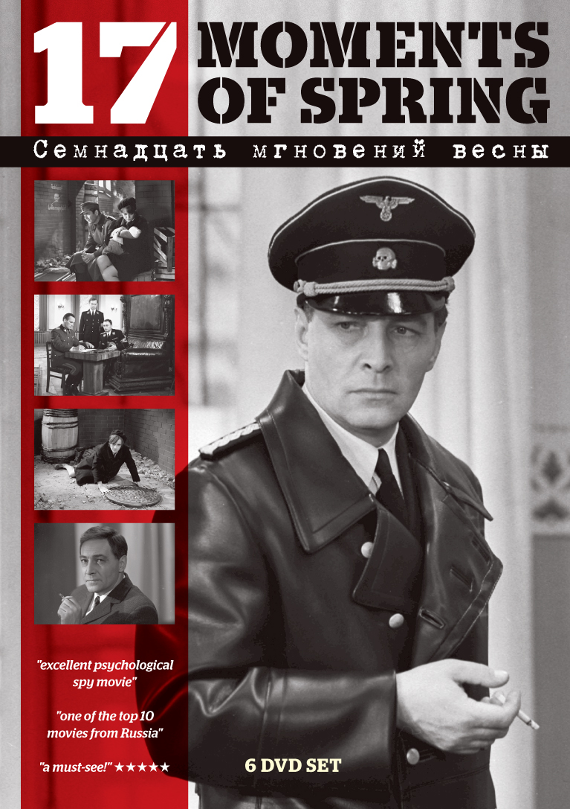
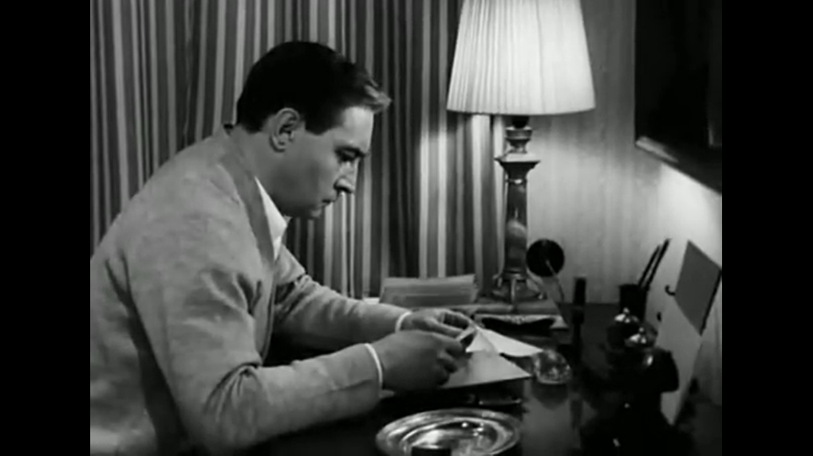
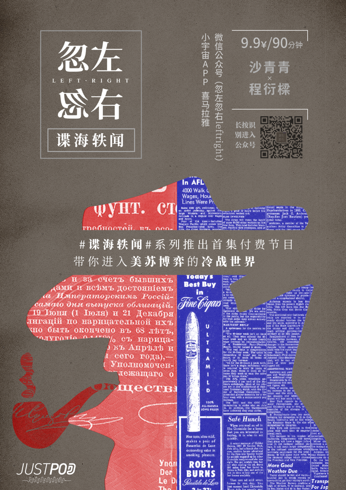

谍海轶闻｜美苏冷战的初阵：古琴科事件始末 Pay


1945年，战争的最后一个春天里。 “三个月以后，法西斯将覆灭。目前在奥德河上，在布达佩斯附近，在托莫瑞还进行着激烈的战斗。”

”希勒特“在地下室大喊：”从未见过像盟国这样矛盾反常的同盟，俄国、英国和美国的目的，是截然对立的，尽管他们在前进。“ 在《春天的十七个瞬间》里，法西斯德国帝国保安局六处的党卫队旗队长施季里茨，接到一份情报，党卫队保安部门的高级军官企图与美英司令部代表艾伦·杜勒斯取得联系。

作为潜伏在德国的苏联侦察员，他必须搞清楚是否存在党卫军高级军官与美英单独媾和的情况，并查清代表谈判的神秘人物是谁。苏联担心，在二战同盟方即将胜利的前夕，德国与英美的单独谈判会产生不利影响。 1945年3月24日，施季里茨最终向苏联情报机构发报表示，德国党卫军参谋长沃尔夫代表党卫队领袖希莱姆正与艾伦·杜勒斯在瑞士伯尔尼秘密谈和。 而在真实的世界线上，英美曾开展过一个情报计划维诺娜，最初的目的传说是为了防止苏联和纳粹德国私下缔结和约。 无论如何，苏联与美国这一对曾经的二战盟友，在战后很快分道扬镳，并经铁幕演说、杜鲁门主义、麦卡锡主义等一系列事件，将冷战局面维持半个世纪之久。
这种关系的扭转究竟是如何发生的？
意识形态上的敌对关系又是如何被建构起来的？
本集付费节目为您讲述美苏冷战的初阵：古琴科事件始末。

可通过往期#谍海轶闻#系列了解英美苏三国情报机构的历史，回顾美国CIA前身、苏联克格勃与英国军情六处的故事。
- 本期 -谍海轶闻｜美苏冷战的初阵：古琴科事件始末 - 本期话题成员 -程衍樑沙青青